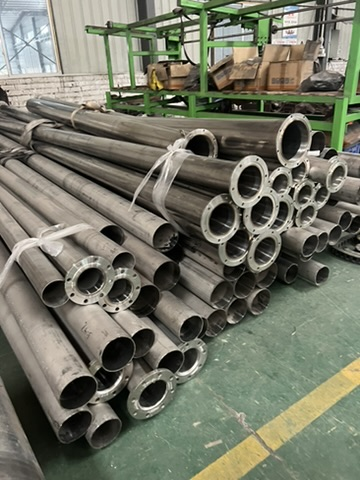

An overseas fabricator receives an attractive offer for cut steel tubes. The seller attaches a mill or inspection certificate and asks for a deposit. The buyer's next decision is whether the document actually connects to the tubes, dimensions and material in the purchase order.
ISO 10474:2013 defines types of inspection documents for steel products supplied according to the order. A document type is only one part of the evidence chain. The buyer still has to connect the order, the reported material and the physical bundles. If the intended product is structural tubing, ASTM A500/A500M-23 is one possible product specification; its public scope does not make a photographed tube or a supplier's lot compliant. The actual standard must be agreed for the intended application.
| Match | Request from the seller | Buyer check |
|---|---|---|
| Order identity | Drawing number and revision, tube form, dimensions, material grade, finish and quantity | Does the document describe the exact item being purchased? |
| Document identity | Issuer, inspection-document type, report number, date, reported tests and applicable specification edition | Is it a complete, attributable record rather than a generic sample PDF? |
| Material identity | Heat or batch reference and any agreed manufacturing or cutting records | Can that reference be followed through the proposed cut lengths? |
| Physical delivery | Bundle or piece labels, packing list and pre-shipment photos showing identifiers | Will the received bundles carry identifiers that can be checked against the records? |
The Taotao steel structures and fabrication range is a starting point for discussing the product. Material grade, manufacturing route, dimensions, testing, MOQ and lead time for a particular offer are to be verified.
- Continue: the order, document references and proposed bundle identifiers align, with a clear receiving check.
- Pause: the seller offers only an unlinked certificate or cannot identify which heat or batch will supply the order.
- Escalate: the specification, test results or physical markings conflict; obtain an engineer's or independent inspector's assessment before deposit or release.
One action: Send a redacted tube specification and proposed certificate to Taotao Trading for a sourcing evidence-gap review.